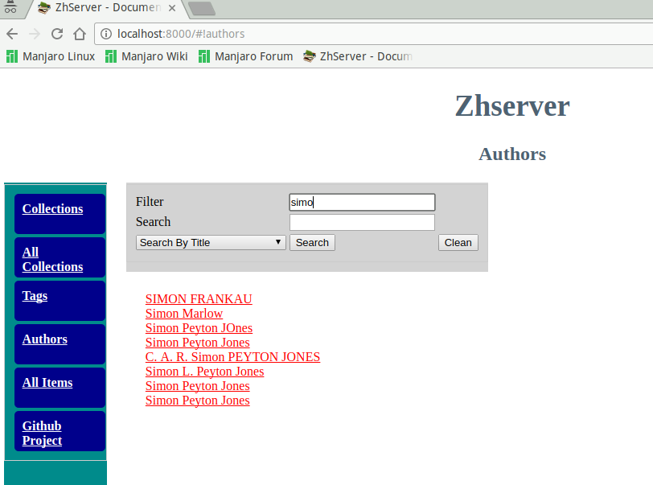

ZHServer - Haskell Book shelve Webserver
Table of Contents
1 User Guide
1.1 Overview
Zhserver is an application server that provides a json REST API to interface Zotero database and allows multiple users and third party apps to search documents by collections, tags, author and so on.
Disclaimer: It is still a work in progress.
Benefits
Find, classify information, books, magazines, laws, patents, technical standards, web page snapshots and papers fast.
Features
- Manage collections of documents like pdf files, books, magazines, thesis, papers, patents, technical documentation and any type of file.
- Find documents by author.
- Find documents by collections. Any item or document can belong to multiple collections.
- Find documents by tags.
- Search documents by content, title and tags.
- Single page web application with URLs that can be bookmarked.
- Web Application and REST API.
Screenshots
{kind=link}
{kind=link}
{kind=link}

Repository
Zhserver Web Site
1.2 Build Instructions
1.2.1 Install Dependencies
Install system dependencies (Arch Linux)
sudo pacman -S postgresql extra/postgresql-libs
Install Haskell dependencies with stack
stack install HDBC-sqlite3 stack install HDBC-postgresql stack install happstack-server
Additional Dependencies:
- Sqlite to run the demonstration database
- PostgresSQL database server for production
1.2.2 Compile
$ stack exec -- ghc --make Server Linking Server ...
1.2.3 Run tests
This server comes with a sample database dump for testing. To test the
server just run $ make run-test it will create the database
testdb/zotero.sqlite from the sample sql dump database/zotero-test.sql
The server will listen the port 8000 and it can be accessed from
http://127.0.0.1:8000 or http://localhost:8000 .
$ make run-test stack exec -- ghc --make -o zhserver.bin src/ZHServer.hs src/Zotero.hs [2 of 2] Compiling Main ( src/ZHServer.hs, src/ZHServer.o ) Linking zhserver.bin ... # stack exec -- ghc src/ZHServer.hs -o bin/ZHServer.bin ./zhserver.bin --conf src/zhserver.conf Server Running ------------------
1.3 Usage
1.3.1 Show Help
$ ./zhserver.bin
Zhserver -- Your cloud book shelve web server
Commands
--env - Load configuration file from ZHSERVER_CONFIG environment variable
--conf <config file> - Load configuration file from <config file>
Start server with all configuration passed through command line
--params [host] [port] [dbUri] [staticPath] [storagePath]
- [host] - Hostname like 0.0.0.0 to listen all hosts
- [port] - Port like 8080
- [dbUri] - Database URI
- [staticPath] - Path to server static files like index.html *.js files
- [storagePath] - Path to Zotero storage directory
1.3.2 Find the Zotero sqlite database
Find the sqlite databases for testing
$ find ~/.mozilla -name zotero.sqlite /home/arch/.mozilla/firefox/dic34vce.default/zotero/zotero.sqlite /home/arch/.mozilla/firefox/mwad0hks.zotero/zotero/zotero.sqlite
1.3.3 Find storage directory
$ find ~/.mozilla -name 'storage' | grep zotero /home/arch/.mozilla/firefox/dic34vce.default/zotero/storage /home/arch/.mozilla/firefox/mwad0hks.zotero/zotero/storage /home/arch/.mozilla/firefox/mwad0hks.zotero/storage $ ls /home/arch/.mozilla/firefox/mwad0hks.zotero/zotero/storage | head -n16 22HUC5F9/ 22NEC2IE/ 236SC55S/ 2372MKGN/ 23K7EW4R/ 24P9755W/ 258V847Q/ 25F3TBCX/ 25HSTF7M/ 267B6WPX/ 26B3KTBR/ 26W3KU88/ 27B9VSG4/ 27ERHSIM/ 27FEX8GN/ 27GZRZ49/ $ ls /home/arch/.mozilla/firefox/mwad0hks.zotero/zotero/storage/267B6WPX 3512243057-widgets.js ghosh_cover150.jpg plusone.js '3ZGfnXYPgAVNngtqatUNgAAAABJRU5ErkJggg==' gplus-32.png product.jpg anon16-rounded.gif gprofile_button-16.png s_bottom.png b16-rounded.gif gradients_light.png share_buttons_20_3.png body_gradient_tile_light.png icon18_edit_allbkg.gif shAutoloader.js brand icon18_email.gif shCore.js cm.002.png icon18_wrench_allbkg.png show_ads.js combinators-as-sublanguage-of-dsl.css icon_delete13.gif stats-flipper.png combinators-as-sublanguage-of-dsl.html icon_wikipedia_search.png s_top.png diagram-trans.gif KhUMAAAAAElFTkSuQmCC triangle_ltr.gif 'DLgASBKnApgkVgXIkhgKiNKJ005s4gDLbCZBiSxfygAAAABJRU5ErkJggg==' mobile_share_icons4.png triangle_open.gif favicon.ico openid16-rounded.gif untitled feed-icon32x32.png photo.jpg $ ls /home/arch/.mozilla/firefox/mwad0hks.zotero/zotero/storage/26B3KTBR/ 'Translatable Finite State Time Machine.pdf'
1.3.4 Set the configuration file
The file zotserver.conf stores the server configuration such as port and host which the server will listen to, the storage path and the database.
Example:
ServerConfig {
serverPort = 8000
, serverHost = "0.0.0.0"
, serverStoragePath = "/home/arch/.mozilla/firefox/mwad0hks.zotero/zotero/zotero"
, serverDatabase = "sqlite:///home/arch/.mozilla/firefox/mwad0hks.zotero/zotero/zotero.sqlite"
}
The serverHost variable sets what address the server will listen to:
- 0.0.0.0 - Listen to all hosts
- 127.0.0.1 - Listen to localhost only
The serverDatabase variable sets the database used by the server. The databases Sqlite and Postgres are supported.
- SQlite URI:
sqlite:///home/arch/.mozilla/firefox/mwad0hks.zotero/zotero/zotero.sqlite
- Postgres URI:
postgres://postgres@localhost/zotero
1.3.5 Run the server
- Run with Configuration file in Environment Variable
Pass the configuration file by enviroment variable:
$ env ZHSERVER_CONFIG=./zhserver.conf ./ZHServer --env Server Running ------------------ Loading default configuration file from ZHSERVER_CONFIG environment variable. sqlite://testdb/zotero.sqlite testdb/zotero.sqlite
or
$ export ZHSERVER_CONFIG=./zhserver.conf $ ./ZHServer Server Running ------------------ Loading default configuration file from ZHSERVER_CONFIG environment variable. sqlite://testdb/zotero.sqlite testdb/zotero.sqlite
- Pass Configuration file by command line:
$ ./ZHServer --conf zhserver.conf Server Running ------------------ sqlite://testdb/zotero.sqlite testdb/zotero.sqlite - Run with all server parameters passed by command line
$ ./zhserver.bin --params 0.0.0.0 9090 "sqlite://testdb/zotero.sqlite" ./assets/ testdb/storage Server Running ------------------
1.4 Documentation
Development Documentation and Design Notes:
API Documentation generated by Haddock
1.5 TODO Road map - Tasks
[X]Find items by tag[X]Find items by ID[X]Find items by collection[X]Find items by author[ ]Find items by a group of authors[ ]Convert database schema from SQLite to Postgres SQL[ ]Add logging to the server.[ ]Display all items from a collections, including items from subcollections.[ ]Improve Front End[ ]Improve Web User Interface Functionality[ ]Improve Web User Interface Design[ ]Improve design for mobile devices[ ]Add tag search[ ]Search with multiple tags[ ]Create JavaScript functions to create templates.[ ]Add the database documentation[ ]Add database schema[ ]Add tests[ ]Add authentication[ ]Build a docker to host the server